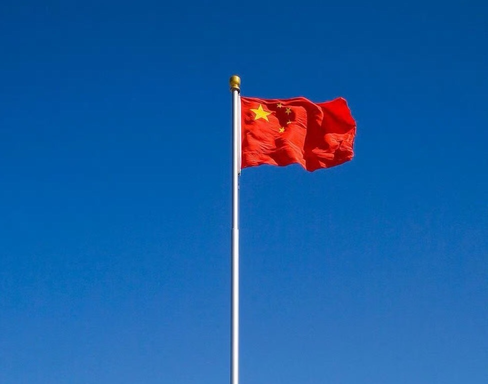
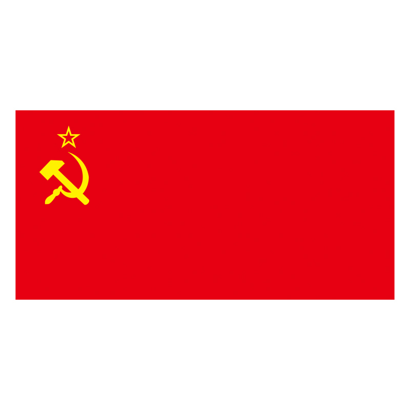
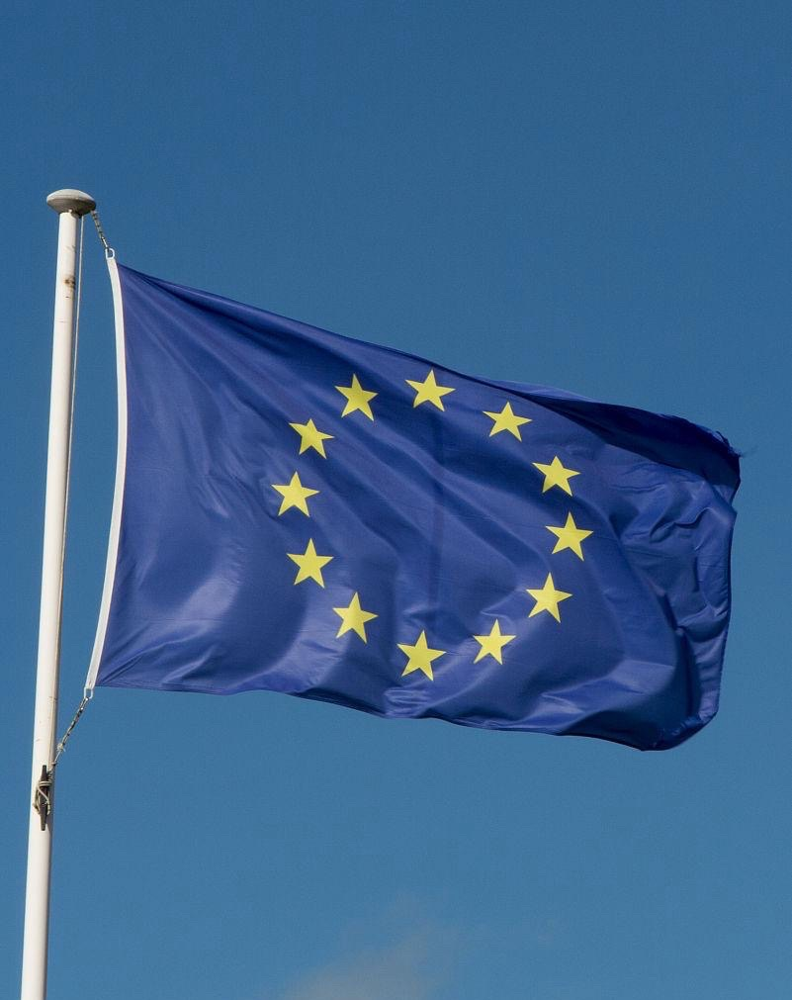
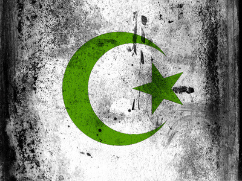
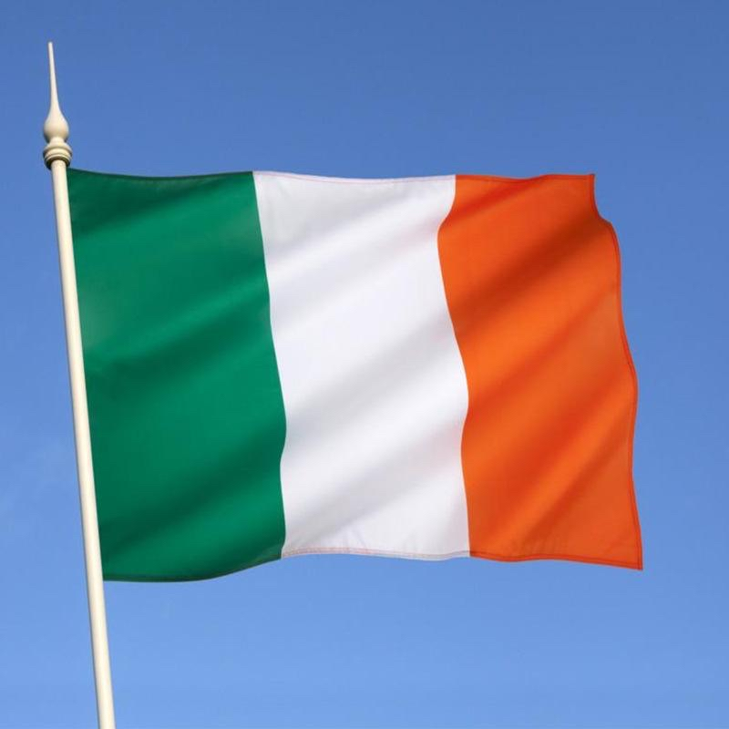
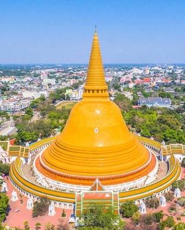
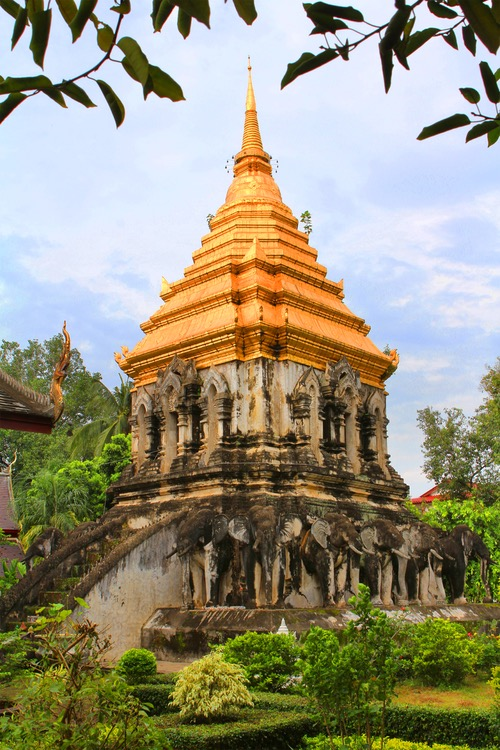
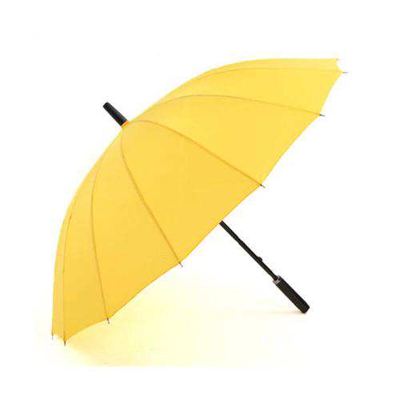

빨강색
 빨간색은 정치에서 가장 흔하고 상징적인 색 중 하나입니다.그것은 종종 힘, 혁명, 비상사태를 나타냅니다.많은 국가에서 붉은색은 좌익 정치·사회주의·공산주의와 밀접한 관련이 있다.
중국: 빨간색은 중국 국기의 주요 색이며 혁명, 공산주의와 인민의 힘을 상징합니다. 구소련: 붉은 깃발과 붉은 오각별은 소련의 중요한 상징이며 노동자 계급의 혁명과 프롤레타리아 통치를 대표한다. 미국: 미국 정치에서 빨간색은 공화당(우파)을 의미한다.선거 때마다 언론은 공화당이 승리한 주를 빨간색으로 표시했다.
푸른색
파란색은 대개 보수주의, 안정, 신뢰와 연관돼 있다.다른 국가와 정치 체계에서 파란색의 상징적 의미는 약간 다르다.
미국: 파란색은 민주당(좌파)을 의미하며 자유와 진보, 변혁을 상징한다. 영국: 파란색은 보수당의 대표색으로 전통과 보수, 질서를 상징한다. EU: EU의 깃발은 파란색으로 단합과 화합, 유럽 국가 간의 협력을 상징합니다.
녹색
 녹색은 일반적으로 정치에서 환경, 평화, 이슬람을 상징합니다.서로 다른 정치 조직은 녹색을 사용하여 서로 다른 메시지를 전달한다.
환경 운동: 녹색은 환경 보호 조직과 녹색당의 상징이며 자연, 생태 보호 및 지속 가능한 발전을 나타냅니다. 이슬람 국가: 녹색은 많은 이슬람 국가의 국기에 나타나며 이슬람과 번영을 상징합니다. 아일랜드: 녹색은 아일랜드의 국가 상징색이며 아일랜드 민족주의와 문화 전통을 나타냅니다.
노란색
  노란색은 종종 낙관, 에너지, 경고를 상징한다.어떤 정치 운동에서, 노란색은 또한 항의와 변혁 요구를 나타내는 데 쓰인다.
동남아시아: 태국에서는 노란색이 국왕의 충성을 상징합니다. 항의 운동: 필리핀에서는 노란색이 반독재와 민주주의 운동을 상징합니다. 정치 운동: 홍콩의 ‘우산 운동’에서 노란색 우산은 민주화 운동의 상징이 되었습니다